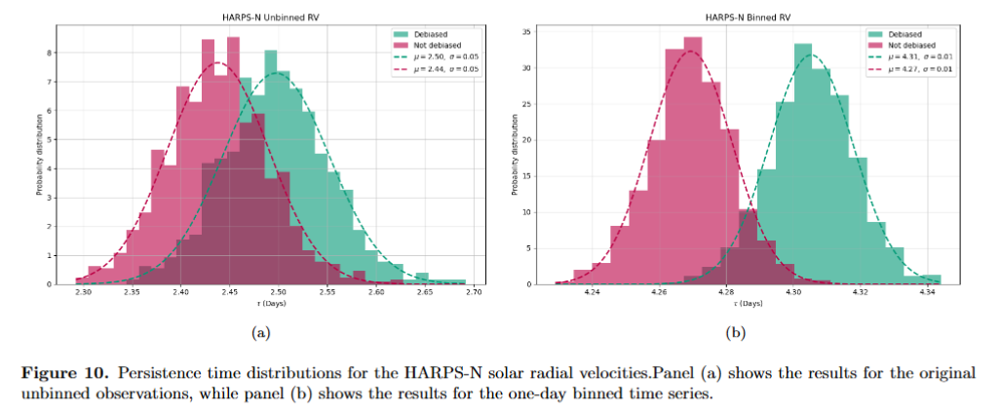

STELLAR VARIABILITY
IN PREPARATION

Measuring Persistence Time in Stellar Atmospheres
How long does stellar variability remember its past?
I use persistence time to quantify how quickly temporal correlations decay in stellar observations. My work adapts TAUEST to irregularly sampled astronomical time series and explores how observational cadence and temporal averaging affect the recovered timescale.
Paper in preparation ↗